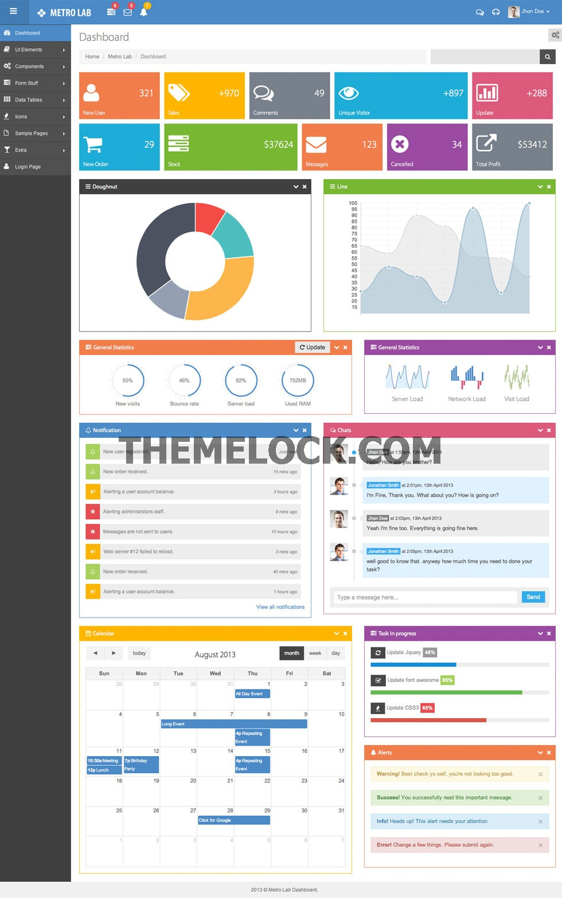
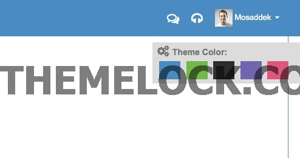

Metro Lab - Responsive Metro Admin Template
Documentation v1.1
Thank You For Purchasing Metro Lab
If you have any questions that are beyond the scope of this help file, please email our support dkmosa@gmail.com.
Introduction
Metro Lab is a responsive admin dashboard template built with Twitter Bootstrap Framework and it has a huge collection of reusable UI components and integrated with jQuery plugins. Metro Lab template works on all major web browsers, Desktop, iPhone, iPad, Tablet and is any smart phone friendly.
By: Vector Lab
Contact: dkmosa@gmail.com
Demo: http://thevectorlab.net/theme/metrolab/
Template
Features
- Realtime Metro
- Clean and Fully Responsive Design, works with multiple devices
- 5 Theme Colors
- Metro View
- Latest Bootstrap 2.3.1 Framework
- Latest jQuery 1.8.3
- 48 HTML pages
- Myriad Pro embedded font
- Easy Cookies(jQuery Cookie)
- Chartjs
- Charts & Graphs(jQuery Peity & jQuery Flot)
- Easy Pie Chart
- jQuery Sparklines
- pulstate
- Editable Data Table
- Integrated Data Tables(jQuery Data Tables)
- Integrated Full Calendar(jQuery Full Calendar)
- Custom Radiobutton, Checkbox and File Input(jQuery Uniform)
- Bootstrap Toggle Buttons
- Bootstrap Tree
- jquery Nestable
- Form Layout, Form Component
- Dropzone
- jquery-validation-1.11.1
- jquery ScrollTo
- Date, time, date range & color Picker(Bootstrap Date, time, range & color Picker)
- WYSIWYG Editor(Bootstrap wysihtml5) and CKEditor
- Inputmask (bootstrap inputmask)
- form wizard (bootstrap wizard)
- Custom Select Dropdown(Bootstrap Chosen)
- Photo Slider(jQuery Fancybox)
- Slider (jQuery Slider)
- jQuery Nice Scroll
- Custom Scrollbar for vertical scrolling contents(jQuery Slim Scroll)
- Multiple format of Data Tables
- Notifications(jQuery Gritter)
- Font Icons(Font Awesome 3.2.1) & Glyphicons
- Detailed Documentation
- Well structured code
Folder Structure
Metro Lab template/
|-- css/
|-- js/
|-- img/
|-- font/
|-- assets/
Root folder: Metro Lab
css: contains all the css files.
img: contains all the image files.
assets: contains all the assets files.
js: contains all the javascript files.
Font: contains Embedded font.
HTML Structure
Beginning of Page
Below code is used at the beginning of all HTML pages to detect Internet Explorer browser version and set a spesific class applied to Internet Explorer versions.
<!DOCTYPE html>
Page Head
Page head contains metadata, javascript and css files:
<head>
Metro Lab
</head>
Header
Header contains of logo and top menu bar and it used in all pages. HTML code of header container shown below:
<!-- BEGIN HEADER -->
<div id="header" class="navbar navbar-inverse navbar-fixed-top">
<!-- BEGIN TOP NAVIGATION BAR -->
<div class="navbar-inner">
<div class="container-fluid">
<!--SIDEBAR TOGGLE, LOGO & NAVIGATION BAR-->
</div>
</div>
<!-- END TOP NAVIGATION BAR -->
</div>
<!-- END HEADER -->
Sidebar
Sidebar contains main navigation menu. HTML code of sidebar container as shown below:
Content
Content consists of page title, breadcrumbs and page's main body. HTML code of Content container as shown below:
Footer
End Of Page(Javascripts)
Javascript files loaded in the end of page. This will reduce page load time.
HTML Code Comment Sample
All the html, css and javascript file contents have easy to refer and meaningful comments:
CSS Code Comment Sample
/*calender*/
.has-toolbar.fc {
margin-top: 50px;
}
.fc-header-title {
display: inline-block;
margin-top: -50px;
vertical-align: top;
}
Javascript Code Comment Sample
// sidebar dropdown menu
jQuery('#sidebar .sub-menu > a').click(function () {
var last = jQuery('.sub-menu.open', $('#sidebar'));
last.removeClass("open");
jQuery('.arrow', last).removeClass("open");
jQuery('.sub', last).slideUp(200);
var sub = jQuery(this).next();
if (sub.is(":visible")) {
jQuery('.arrow', jQuery(this)).removeClass("open");
jQuery(this).parent().removeClass("open");
sub.slideUp(200);
} else {
jQuery('.arrow', jQuery(this)).addClass("open");
jQuery(this).parent().addClass("open");
sub.slideDown(200);
}
});
// sidebar toggle
$('.icon-reorder').click(function () {
if ($('#sidebar > ul').is(":visible") === true) {
$('#main-content').css({
'margin-left': '0px'
});
$('#sidebar').css({
'margin-left': '-180px'
});
$('#sidebar > ul').hide();
$("#container").addClass("sidebar-closed");
} else {
$('#main-content').css({
'margin-left': '180px'
});
$('#sidebar > ul').show();
$('#sidebar').css({
'margin-left': '0'
});
$("#container").removeClass("sidebar-closed");
}
});
Font
Metro Lab uses Myriad Pro Light and Myriad Pro Regular font. The embedded font in main css file
@font-face {
font-family: 'MyriadPro-Light';
src: url('../font/myriadprolight.eot');
src: url('../font/myriadprolight.eot?#iefix') format('embedded-opentype'),
url('../font/myriadprolight.woff') format('woff'),
url('../font/myriadprolight.ttf') format('truetype'),
url('../font/myriadprolight.svg#myriadprolight') format('svg');
font-weight: normal;
font-style: normal;
}
@font-face {
font-family: 'MyriadPro-Regular';
src: url('../font/myriadproregular.eot');
src: url('../font/myriadproregular.eot?#iefix') format('embedded-opentype'),
url('../font/myriadproregular.woff') format('woff'),
url('../font/myriadproregular.ttf') format('truetype'),
url('../font/myriadproregular.svg#myriadproregular') format('svg');
font-weight: normal;
font-style: normal;
}
Theme Configuration

Setup Theme
Metro Lab comes with 5 color themes, default, gray, green, purple & red. To setup a selected theme. Include style-[theme_name].css in page head. For instance, if you like to use gray theme, include style-gray.css css file. CSS file load order should be followed as shown below:
Metro Lab
New Page
To create a new page, you can use blank.html which provides basic page layout which you can extend and modify further.
Custom icon/image Implementation
As we used fontawesome icons in whole site so we recommend to used it. But if you want to implement custom icons or images you can do it easily. Put you icons/images in img folder and write css in style.css
CSS example is following..
.class-name {
background-image: url(../img/icon-name.png);
background-repeat: no-repeat;
width:20px; /* set your icon width */
height:20px; /* set your icon height */
display:inline-block;
}
HTML example is following..
<div class="class-name"> </div>
Javascript Initialization
Common javascript initialization implemented in js/common-scripts.js which is need to include in all pages.
var Script = function () {
//Common Script Goes Here
}();
References
Below is the list of all plugins and external resources used to power this template.
| Name | Description | URL |
|---|---|---|
| Twitter Bootstrap 2.3.1 | Sleek, intuitive, and powerful front-end framework for faster and easier web development | http://twitter.github.com/bootstrap/ |
| jQuery 1.8.3 | Core Javascript library | http://www.jquery.com |
| Bootstrap Tree | A lightweight Tree component, built for use with the Twitter Bootstrap framework. | https://github.com/cutterbl/Bootstrap-Tree |
| Nestable | Drag & drop hierarchical list with mouse and touch compatibility (jQuery / Zepto plugin) | https://github.com/dbushell/Nestable |
| Dropzone | DropzoneJS is an open source library that provides drag'n'drop file uploads with image previews. | http://www.dropzonejs.com/ |
| jquery scrollTo | jquery scrollTo | https://github.com/flesler/jquery.scrollTo |
| jQuery dualListBox-1.3 | jQuery dualListBox-1.3 | http://www.meadmiracle.com/dlb/DLBDocumentation.aspx |
| jQuery Cookie | A simple, lightweight jQuery plugin for reading, writing and deleting cookies. | https://github.com/carhartl/jquery-cookie |
| jQuery BlockUI | The jQuery BlockUI Plugin lets you simulate synchronous behavior when using AJAX, without locking the browser | http://jquery.malsup.com/block/ |
| Peity | Peity (sounds like deity) is a simple jQuery plugin that converts an element's content into a simple canvas mini pie line or bar chart and is compatible with any browser that supports canvas: Chrome, Firefox, IE9+, Opera, Safari. | http://benpickles.github.com/peity/ |
| jQuery Cookie | A simple, lightweight jQuery plugin for reading, writing and deleting cookies. | https://github.com/carhartl/jquery-cookie |
| jQuery Pulsate | jQuery Pulsate provides animated pulsating effect that's useful for focussing attention to a certain part of your webpage in a subtle way. | http://kilianvalkhof.com/jquerypulsate/ |
| Respond | A fast & lightweight polyfill for min/max-width and CSS3 Media Queries (for IE 6-8, and more) | https://github.com/scottjehl/Respond |
| Excanvas | Modern browsers like Firefox, Safari, Chrome and Opera support the HTML5 canvas tag to allow 2D command-based drawing. ExplorerCanvas brings the same functionality to Internet Explorer. To use, web developers only need to include a single script tag in their existing web pages | http://excanvas.sourceforge.net/ |
| Colorpicker for Bootstrap | Add color picker to field or to any other element | http://www.eyecon.ro/bootstrap-colorpicker/ |
| Datepicker for Bootstrap | Add datepicker picker to field or to any other element | http://www.eyecon.ro/bootstrap-datepicker/ |
| Date Range Picker for Bootstrap | This date range picker component for Twitter Bootstrap creates a dropdown menu from which a user can select a range of dates | https://github.com/dangrossman/bootstrap-daterangepicker |
| Bootstrap Timepicker | Easily select a time for a text input using your mouse or keyboards arrow keys. | http://jdewit.github.com/bootstrap-timepicker/ |
| Clockface Timepicker | Clockface is a simple timepicker for Twitter Bootstrap | http://vitalets.github.com/clockface/ |
| jQuery Tags Input | Magically convert a simple text input into a cool tag list with this jQuery plugin | https://github.com/xoxco/jQuery-Tags-Input |
| Bootstrap Toggle | Bootstrap Toggle Buttons Plugin | https://github.com/nostalgiaz/bootstrap-toggle-buttons |
| Bootstrap WYSIWYG5 | Simple WYSIWYG Editor for Bootstrap | http://jhollingworth.github.com/bootstrap-wysihtml5/ |
| CKEditor | CKEditor is a ready-for-use HTML text editor designed to simplify web content creation | http://ckeditor.com/ |
| Chosen for Twitter Bootstrap | Chosen is a JavaScript plugin that makes long, unwieldy select boxes much more user-friendly | http://chosen-sass-bootstrap.herokuapp.com/ |
| DataTables | DataTables for Twitter Bootstrap | http://www.datatables.net/blog/Twitter_Bootstrap_2 |
| Input Mask | Bootstrap Inputmask | http://jasny.github.io/bootstrap/javascript.html#inputmask |
| jQuery Slider | Interactive jQuery Slider | http://jqueryui.com/slider/ |
| Bootstrap Fileupload | The file upload plugin allows you to create a visually appealing file or image upload widgets | http://jasny.github.com/bootstrap/javascript.html#fileupload |
| FancyBox | FancyBox is a tool for displaying images, html content and multi-media | http://fancybox.net/ |
| jQuery Easy Pie Chart | Lightweight jQuery plugin to render and animate nice pie charts with the HTML5 canvas element | http://rendro.github.io/easy-pie-chart/ |
| jQuery Sparklines | This jQuery plugin generates sparklines (small inline charts) directly in the browser using data supplied either inline in the HTML, or via javascript. | http://omnipotent.net/jquery.sparkline |
| Chartjs | Easy, object oriented client side graphs for designers and developers | http://www.chartjs.org/ |
| Flot | Flot is a pure JavaScript plotting library for jQuery, with a focus on simple usage, attractive looks and interactive features. | http://www.flotcharts.org/ |
| FullCalendar | FullCalendar is a jQuery plugin that provides a full-sized, drag & drop calendar | http://arshaw.com/fullcalendar/ |
| Gritter Notifications | The super awesome background is just to show you that all notifications are transparent | http://boedesign.com/demos/gritter/ |
| jQuery NiceScroll | Nicescroll is a jquery plugin, for nice scrollbars with a very similar ios/mobile style. | http://areaaperta.com/nicescroll/ |
| jQuery slimScroll | slimScroll is a small (3.7KB) jQuery plugin that transforms any div into a scrollable area with a nice scrollbar | http://rocha.la/jQuery-slimScroll |
| jQuery Validation Plugin | The jQuery Validation Plugin provides drop-in validation for your existing forms, while making all kinds of customizations to fit your application really easy | http://jqueryvalidation.org/ |
| Uniform | Uniform masks your standard form controls with custom themed controls. It works in sync with your real form elements to ensure accessibility and compatibility | http://uniformjs.com/ |
| Font Awesome 3.2.1 | The iconic font designed for use with Twitter Bootstrap | http://fortawesome.github.com/Font-Awesome/ |
Upgrade
To upgrade from v1.0 to v1.1 you may replace the assets, img, css and js folder.
Please do not forget to backup your files before the upgrade. If you encountered any problem during the upgrade please contact our support at dkmosa@gmail.com
End Of Documentation
Once again, thanks for purchasing Metro Lab.